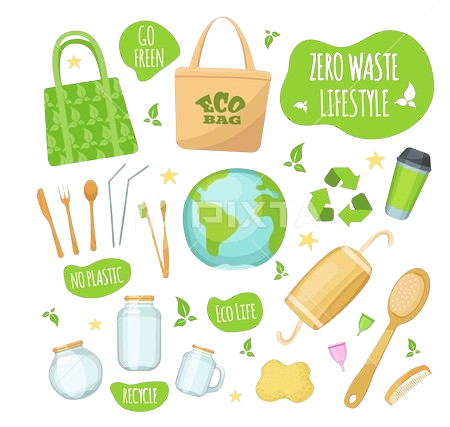
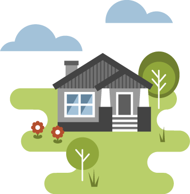

Stay updated with the latest trends in sustainable and eco-friendly products.
Using Sustainable Products Is Important
Published on July 1, 2024
We cannot preserve resources for future generations and lessen our influence on the environment without sustainable products.
They encourage a healthier planet and reduce waste.
The use of sustainable products can contribute significantly in little but substantial ways to pollution reduction and the promotion of healthy living.
Eco-friendly habits can be incorporated into many facets of daily life, such utilizing biodegradable packaging or reusable household items.
Highest Five Eco-Friendly Products You Must Try
Published on July 5, 2024
Check out our best selection of environmentally friendly products that can significantly improve your sustainability initiatives. These products, which range from organic skincare products to reusable water bottles, are useful and eco-friendly.
Some of our top recommendations include reusable shopping bags, bamboo toothbrushes, and compostable kitchenware. These products are designed to reduce waste and promote a greener lifestyle.
How to Begin Leading a Waste-Free Lifestyle
Published on July 10, 2024

Adopting a zero-waste lifestyle can seem daunting, but with a few simple changes, you can significantly reduce your environmental impact. Here are some tips to get started.
Start by eliminating single-use plastics, composting organic waste, and buying products in bulk. Small steps can lead to significant changes, making it easier to live a zero-waste lifestyle.
10 Easy Steps to Lessen Your Carbon Footprint
Published on July 15, 2024
Reducing your carbon footprint doesn't have to be complicated. Here are ten simple yet effective ways to lower your environmental impact and live more sustainably.
From using public transport to conserving energy at home, these tips will help you make a positive difference. Every small action counts towards creating a healthier planet.
The Advantages of Cleaning with Eco-Friendly Products
Published on July 20, 2024
Eco-friendly cleaning products are not only better for the environment, but they are also safer for your health. Discover the benefits of switching to green cleaning solutions.
These products often contain fewer harmful chemicals and are made from natural ingredients. They help reduce indoor pollution and are less likely to cause allergies or skin irritations.
How to Make Your Home More Energy Efficient
Published on July 25, 2024

Making your home more energy-efficient can save you money and reduce your environmental impact. Here are some practical tips to help you get started.
From installing energy-efficient appliances to improving insulation, there are many ways to make your home more sustainable. These changes can significantly reduce your energy consumption and carbon footprint.